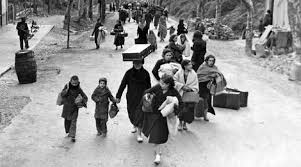
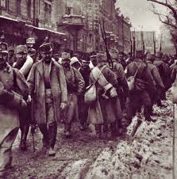
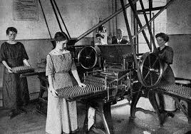
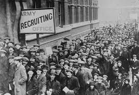
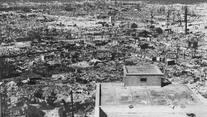
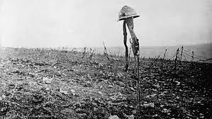

Las guerras siempre dejan un rastro de caos y destruccion por donde pasan, dejan a miles de inocentes muertos y heridos, en las guerras siempre personas inocentes pagan el precio por las potencias en conflicto, sin merecerlo ademas de afectar basicamente a la economia mundial, las exportaciones de alimentos y recursos pueden llegar a verse afectadas debido a la guerra, pues pueden afectar a el medio ambiente y hacer que se pierdan muchos recursos prima para el sustento de la poblacion, junto a recursos para la alimentacion de animales y para la cosecha de cultivos, en esta apartado se hablara acerca de las diversas afectaciones que causo las dos guerras mundiales.
Se estima que entre aproximadamente 15 y 30 millones de personas murieron en la primera guerra mundial, en su totalidad incluyendo civiles y militares por igual y mas de 20 millones de personas resultaron heridas a causa de la guerra, ademas de contar una muerte principal que fue la detonante de la primera guerra mundial como lo es el asesinato de el principe heredero austríaco Franz Ferdinand y a su esposa Sophie por parte de los serbios. Cabe recalcar que para la segunda guerra mundial las muertes practicamente se vieron lastimosamente incrementadas, llegando entre los 50 y 100 millones de fallecidos, incluyendo civiles y militares por igual
Las dos guerras mundiales generaron una presión sin precedentes sobre los recursos naturales y financieros de los países involucrados. Las naciones destinaron enormes cantidades de dinero a la producción militar, dejando de lado sectores como la educación, la salud y la infraestructura. Además, la destrucción de fábricas, vías de transporte y tierras agrícolas provocó una crisis económica prolongada, especialmente en Europa. La escasez de materias primas y alimentos también incrementó los precios y profundizó la pobreza en muchas regiones.
 A nivel social, las guerras mundiales dejaron millones de muertos y desplazados. Muchas familias fueron destruidas, y surgieron generaciones enteras marcadas por la pérdida y el trauma. La incorporación masiva de mujeres al trabajo industrial y militar alteró las estructuras sociales tradicionales, lo que en muchos países abrió paso a nuevas luchas por la igualdad de género. Además, surgieron movimientos migratorios importantes, tanto por refugiados como por la búsqueda de mejores oportunidades fuera de zonas devastadas por el conflicto.
 Los escenarios de guerra sufrieron una degradación ambiental considerable. Los bombardeos, el uso de químicos y la movilización de maquinaria pesada destruyeron ecosistemas completos, bosques, ríos y suelos fértiles. El uso de armas químicas, especialmente durante la Primera Guerra Mundial, dejó secuelas en la tierra y el agua que tardaron décadas en desaparecer. Además, la necesidad de combustible y metales llevó a la sobreexplotación de recursos naturales en muchas partes del mundo.
 Las dos guerras mundiales marcaron profundamente al mundo en todos sus aspectos. Más allá del campo de batalla, sus efectos se extendieron a la economía global, las estructuras sociales y el medio ambiente. La humanidad aprendió duras lecciones sobre los costos de los conflictos a gran escala, y a partir de estas experiencias surgieron nuevas iniciativas internacionales para preservar la paz y la cooperación entre naciones.